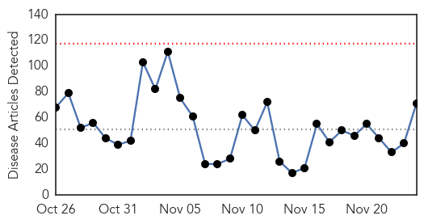
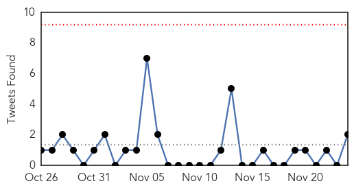
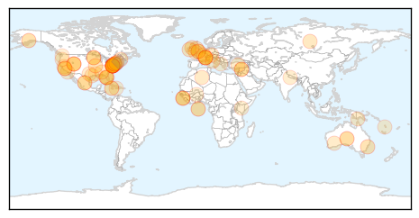

30 Day Trends
Web: 0 alerts, 0 warnings
Twitter: 0 alerts, 0 warnings
Top Articles:
- 0.988
- Zika virus: Public health alerts in South America and Caribbean as fears illness may cause birth deformities -- Health & Wellness -- Sott.net
- 0.951
- State officials: 17 confirmed cases of Salmonella stemming from cucumbers, 7 connected to daycare center
- 0.941
- 5 Utah E. coli cases linked to Costco chicken salad, health officials say
- 0.933
- Chipotle E. Coli Continues to Spread and Sicken Customers in More States
- 0.900
- Cases of E. coli traced to Costco chicken salad in Utah
- 0.891
- Agency: 19 people ill in E. coli outbreak tied to Costco
- 0.891
- 19 people ill in E. coli outbreak tied to Costco
- 0.885
- Hannibal hotel closes after Legionnaires' bacteria found
- 0.885
- Hannibal hotel closes after Legionnaires' bacteria found
- 0.866
- CLIMATE BRIEF-Businesses outline proposals for Paris climate deal
- 0.866
- Australia calls for greater intel sharing in Asia to stop Paris-style attack
- 0.865
- Costco Chicken Salad Tied To E. Coli Outbreak Sickening 19 People In 7 States « CBS Sacramento
- 0.856
- New disease transmitted by insects spreads in Guinea
- 0.847
- New disease transmitted by insects spreads in Guinea - Xinhua
- 0.816
- 'More money needed' to beat TB, health agencies warn
- 0.801
- Costco pulls chicken salad off shelves due to E. coli
- 0.792
- Legionella bacteria leads to partial closure of hotel in Hannibal
- 0.788
- Is it dangerous to eat at Chipotle after E. coli outbreak?
- 0.772
- NHS failures mean thousands suffer or die from severe sepsis each year
- 0.761
- Farm Recalls Produce Used In Costco Chicken Linked To E. Coli Outbreak
- 0.745
- Legionnaire’s lingers at Bay Pines VA, but experts see little danger
- 0.743
- Column: Time for White House to step up on TB
- 0.741
- Acute hospitals should be for acute cases only
- 0.716
- Turkey shoots down Russian fighter jet 'near Syrian border'
- 0.712
- How to avoid colds and flu when you fly
- 0.682
- Experts Say Kissing Bug Poses Little Threat To Georgians
- 0.676
- Hundreds admitted to Yeovil District Hospital with symptoms of malnutrition, figures reveal
- 0.672
- 5 E. coli cases in Utah linked to Costco chicken salad
- 0.669
- Donald Trump, Ben Carson claim American Muslims cheered 9/11 attacks
- 0.663
- Canada to announce plan to resettle 25,000 refugees
- 0.654
- Nurses risk missing sepsis by not recording vital signs
- 0.652
- Vibrio bacteria has killed 13 this year in Florida: What foods to avoid
- 0.647
- Alarm over drug-resistant TB on Australia's border
- 0.642
- Turkey reveals new cabinet with Erdogan's son-in-law in key post
- 0.642
- Paris attacks organiser 'targeted business district' in bomb plot
- 0.642
- Man who lent flat to Paris attacker goes before judge
- 0.642
- Foo Fighters release free EP dedicated to Paris, hint at hiatus
- 0.642
- Are French civil liberties another victim of Paris attacks?
- 0.642
- Tunisia declares state of emergency after deadly bus blast
- 0.640
- Costco’s chicken salad linked to case of E. coli in Washington, state says
- 0.637
- Use of antivirals in retrovirus-infected cats
- 0.630
- CDC announces first Eastern Equine Encephalitis death in Maine
- 0.625
- Ready to travel? 7 tips to prevent ticks on Fido
- 0.624
- Camden-Narellan Advertiser
- 0.622
- Feds Investigating Link Between Costco Chicken Salad And Ecoli Cases « CBS San Francisco
- 0.606
- Deadly 'kissing bug' spreads; bites you as you sleep
- 0.602
- Eight bat attacks prompt health warning for Hunter residents
- 0.601
- FDA targets inaccurate medical tests, citing dangers and costs
- 0.592
- Sudafed Sinus + Allergy & Pain Relief Tablets (Pseudoephedrine hydrochloride, Paracetamol, Triprolidine hydrochloride) Drug
- 0.592
- 25 Cases of Illness Due to Salmonella Outbreak Reported in Washington
Showing top 50 articles...
Top Tweets:
- 0.734
- RT: El problema de este sistema es que no se basa en el bienestar del ser humano. Se basa en la plata.
- 0.734
- Flu vaccines have a very good safety record. Serious problems from Flu vaccine are very rare. For more info, visit: https://t.co/GrVkkRUWCg
- 0.700
- RT: Estamos a unos días de armar el arbolito, de cobrar el aguinaldo, de patinarlo en 5 días, de Navidad, Año Nuevo, famili…
- 0.604
- RT: Hay que volver a los desayunos en la cama. Tomar algo caliente mientras vemos una peli, un día de frío.
- 0.541
- Want to avoid the flu? Or ease flu symptoms? @USAToday shares helpful videos with answers to these questions https://t.co/YfIRLVqsQD
- 0.521
- RT: Le BCEN rejette la requête de Maryse Narcisse lui demandant d'exclure Jovenel Moise de la course électorale Haiti
Web/News Articles
Tweets
Article Locations
Article Confidences